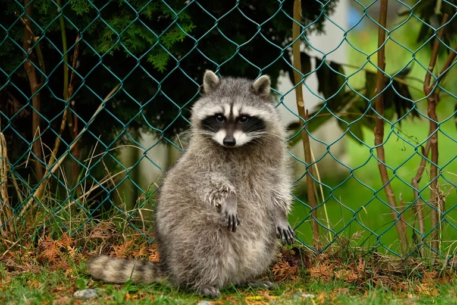
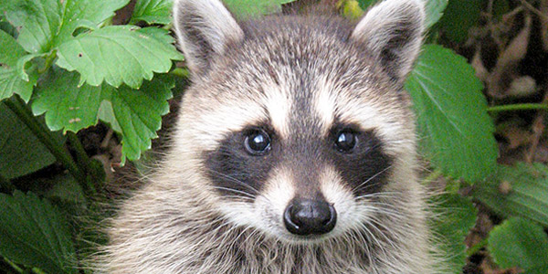
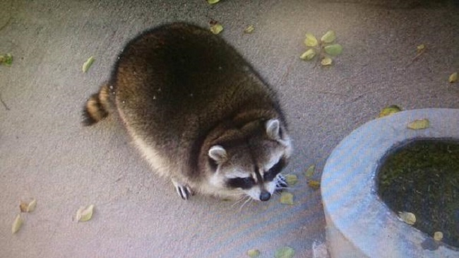
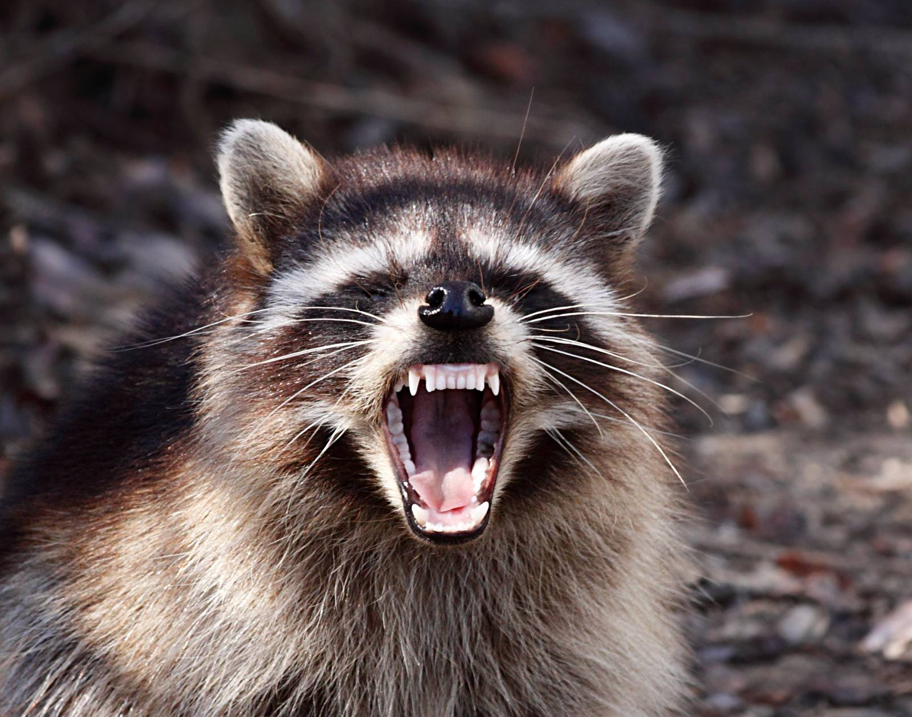

Racoons
Raccoons are round, fuzzy creatures with bushy tails and a black mask of fur that covers their eye area. These animals may look like cute, cuddly bandits, but they can be quite fearsome when approached. They are also called ringtail, one of the seven species of nocturnal animals characterized by bushy ringed tails. It is native to North America. It is the largest of the procyonid family, having a body length of 40 to 70 cm, and a body weight of 5 to 26 kg.




- Raccoons have been around for 40,000 years.
- Raccoons migrated north by adapting to new environments and can now be found as far north as Alaska.
- Raccoons are small, have sensitive hands and can eat just about anything.
- There are 20 times more raccoons in cities than there were 70 years ago.
- Toronto is the raccoon capital of the world. Fifty times more raccoons live there than in the surrounding countryside.
- Raccoons' hands have a bunch of nerves that are like taste buds sending information to the brain.
- Raccoons use up to 20 den sites at a time, from sheds to sewers.
- In the city, raccoon territories average around three square blocks.
Different Types of Raccons
- Procyon Lotor Lotor
- Procyon Lotor Maritimus
- Procyon Lotor Salutus
- Procyon Lotor Litoreus
- Procyon Lotor Elucus
- Procyon Lotor Inesperatus
- Procyon Lotor Auspicatus
- Procyon Lotor Varius
- Procyon Lotor Fuscipes
- Procyon Lotor Mexicanus
- Procyon Lotor Hirtus
National Geographic Video